OTIUM OTIUM — это практика осмысленного досуга. В античной традиции otium означало не отдых от труда, а время, в котором человек возвращается к взгляду, памяти и мышлению.
Мы создаём маршруты не для «посещения», а для пребывания — для внимательного присутствия в архитектуре и памяти места.
OTIUM существует для тех, кто хочет смотреть медленно.
Содержание Историческая справка 1. Галло-римское зодчество (I–V вв.) 2. Романский стиль (XI–XII вв.) 3. Раннеготика (XII–XIII вв.) 4. Радиантная и пламенеющая готика (XIV–XV вв.) 5. Французское Возрождение (XVI в.) 6. Классицизм эпохи Людовика XIII (XVII в., первая половина) 7. Классицизм Людовика XIV (вторая половина XVII в.) 8. Регентство и рококо (начало XVIII в.) 9. Рококо Людовика XV (середина XVIII в.) 10. Неоклассицизм Людовика XVI (конец XVIII в.) 11. Революция и ампир (конец XVIII — начало XIX вв.) 12. Реставрация и Июльская монархия (1815–1848) 13. Второе имперское зодчество (1852–1870) 14. Османизация Парижа (1853–1870) 15. Прекрасная эпоха (конец XIX — начало XX вв.) 16. Ар-нуво (1890‑е — 1914) 17. Ар-деко и межвоенный период (1920–1930‑е) 18. Модернизм и Ле Корбюсье (1920–1960‑е) 19. Брутализм (1960–1970‑е) 20. Великие проекты и постмодерн (1980–1990‑е) 21. Современная архитектура (2000‑е — н. в.) Историческая справка
↑ Содержание
От галло-римских театров и романских аббатств до пирамид Лувра и небоскрёбов Дефанса французская архитектура соединяет государственный идеал с изобретательностью формы.
Готика Иль-де-Франс, замки Луары и классицизм Людовика XIV создали язык абсолютной монархии; рококо и неоклассика подготовили революцию и ампир. Османизация Парижа, Вторая империя и Прекрасная эпоха задали ритм бульваров и парадных фасадов.
Ар-нуво Гимара, ар-деко и модернизм Ле Корбюсье изменили жилую ячейку и образ города. Великие проекты 1980-х и современные культурные центры вписывают Францию в глобальный диалог об устойчивости и публичном пространстве.
Каждая глава путеводителя посвящена одному стилю и содержит типовые примеры с историческим комментарием.
1. Галло-римское зодчество (I–V вв.) ↑ Содержание
Театры, термы и мосты римской Галлии.
Арена Нима
↑ Содержание
Адрес: Ним | Стиль: Галло-римское зодчество (I–V вв.) | Период: ок. 70 н.э.
Амфитеатр для гладиаторских боёв. Одна из крупнейших арен римской Галлии.
Мезон Карре
↑ Содержание
Адрес: Ним | Стиль: Галло-римское зодчество (I–V вв.) | Период: ок. 2 н.э.
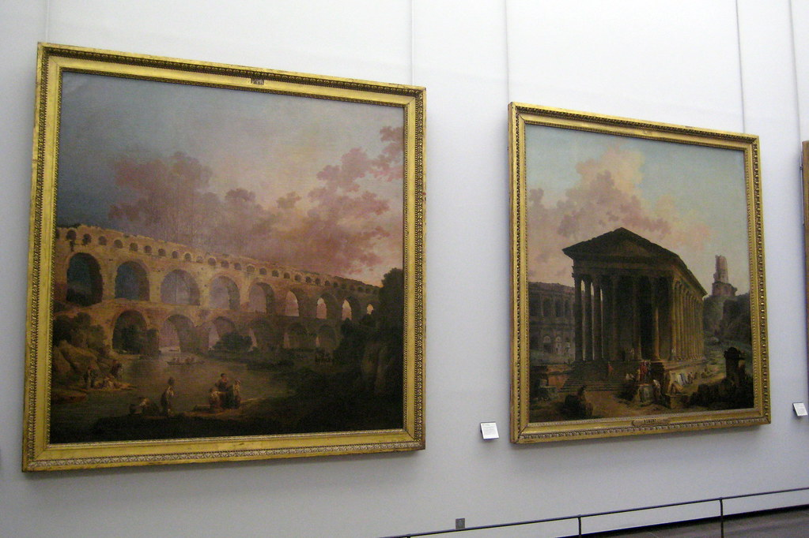
Храм в псевдопериптере, сохранившийся почти без изменений. Образец римского культового зодчества.
Пон-дю-Гар
↑ Содержание
Адрес: Ним | Стиль: Галло-римское зодчество (I–V вв.)
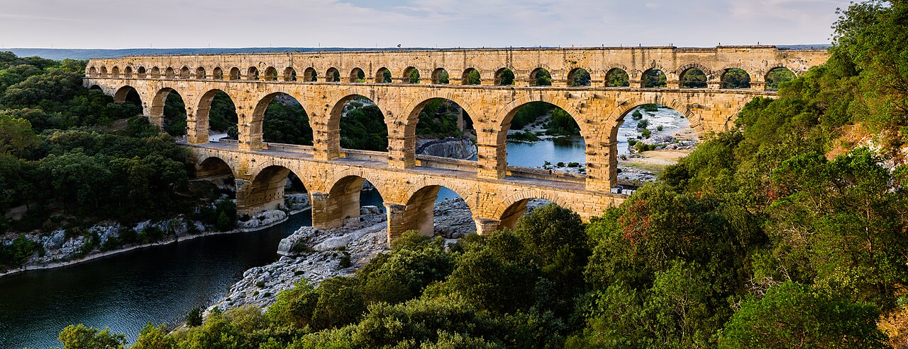
Трёхярусный акведук через реку Гардон. Вершина римской гидротехники в Галлии.
Театр Оранжа
↑ Содержание
Адрес: Оранж | Стиль: Галло-римское зодчество (I–V вв.)
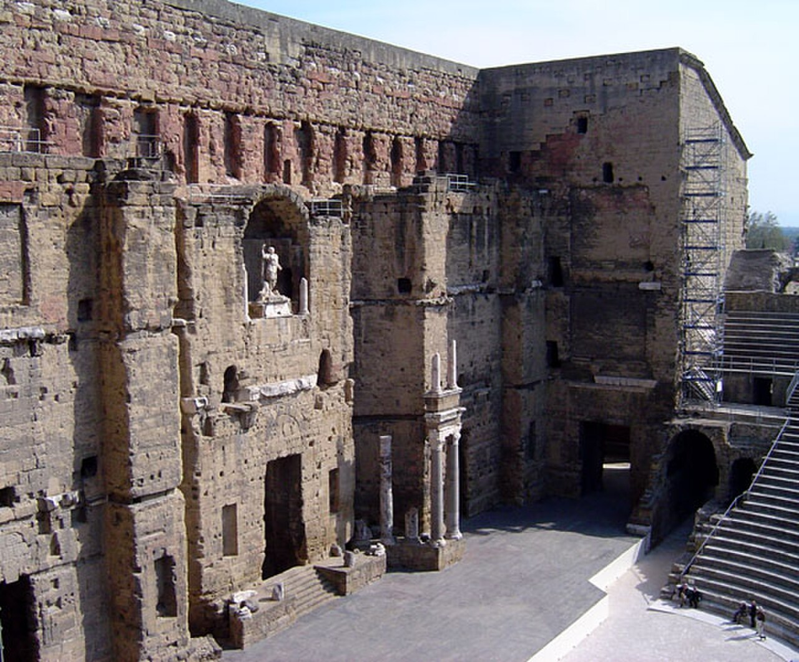
Театр с сохранившейся сценической стеной. ЮНЕСКО: римская сценическая архитектура.
Термы Клюни
↑ Содержание
Адрес: Париж | Стиль: Галло-римское зодчество (I–V вв.)
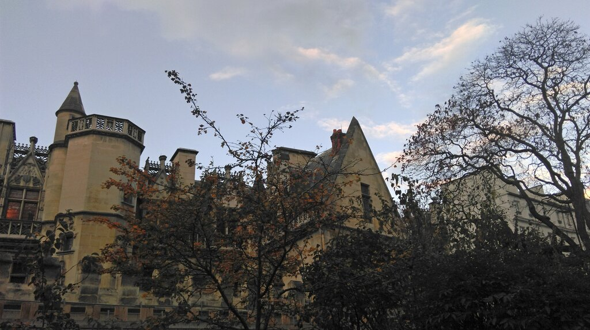
Фрагменты римских бань на Левом берегу. Связь Парижа с Лютецией.
2. Романский стиль (XI–XII вв.) ↑ Содержание
Паломнические аббатства и массивные апсиды.
Аббатство Сен-Дени
↑ Содержание
Адрес: Сен-Дени | Стиль: Романский стиль (XI–XII вв.)
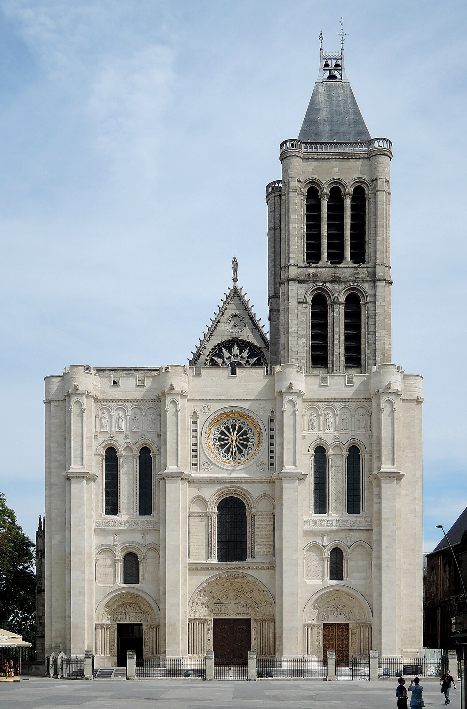
Место коронаций и погребений королей. Романская базилика, предшественница готики.
Везле
↑ Содержание
Адрес: Везле | Стиль: Романский стиль (XI–XII вв.)
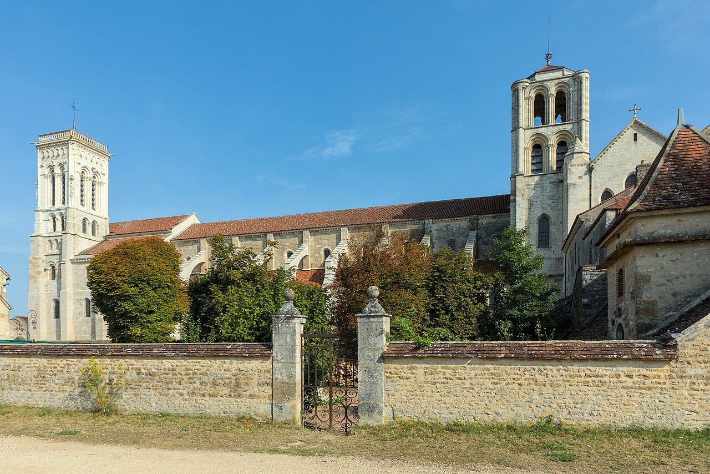
Базилика Марии Магдалины на холме. Важный пункт паломнического пути.
Конк
↑ Содержание
Адрес: Конк | Стиль: Романский стиль (XI–XII вв.)
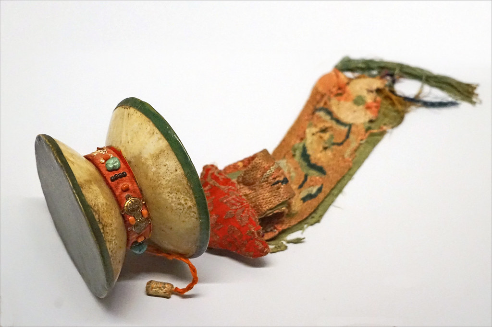
Аббатство с ризой святой Фой. Жемчужина романского Юга.
Сен-Сернин
↑ Содержание
Адрес: Тулуза | Стиль: Романский стиль (XI–XII вв.)
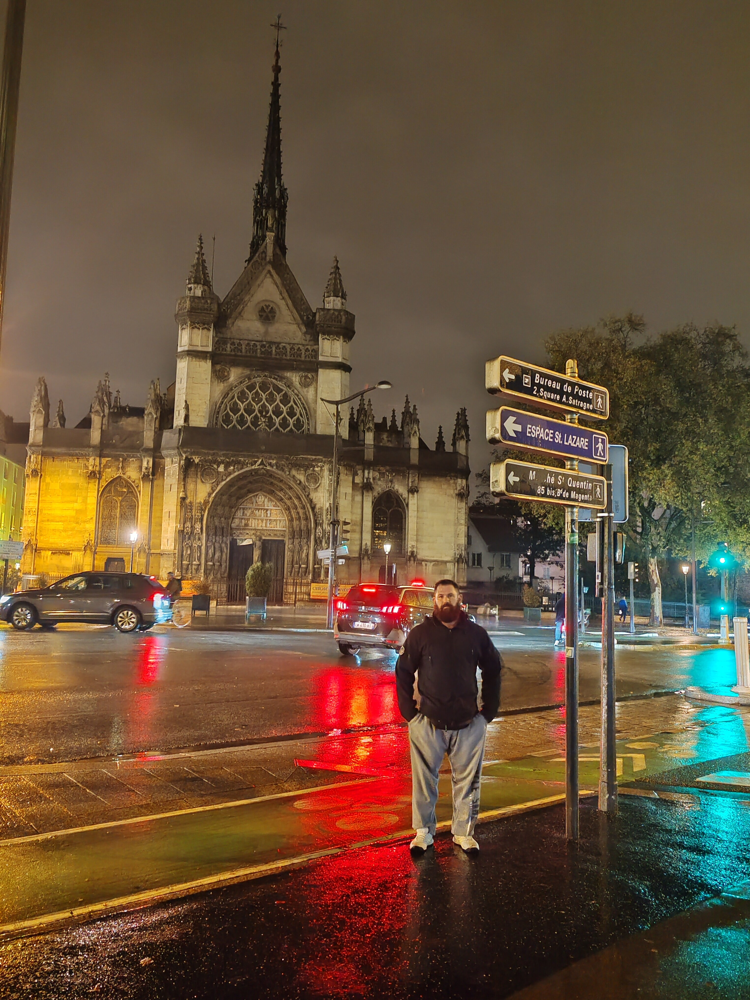
Паломническая базилика на Пути святого Иакова. Крупнейший романский храм Франции.
Собор Отёна
↑ Содержание
Адрес: Отён | Стиль: Романский стиль (XI–XII вв.)
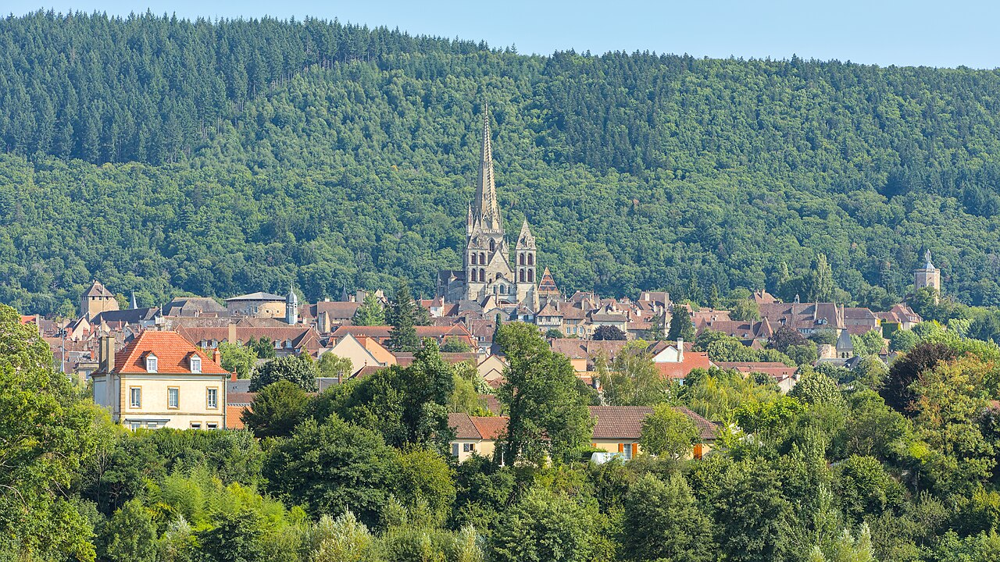
Скульптурный декор Гислеберта. Романская скульптура Бургундии.
3. Раннеготика (XII–XIII вв.) ↑ Содержание
Сен-Дени и соборы Иль-де-Франс: стрельчатые арки и витражи.
Амьен
↑ Содержание
Адрес: Амьен | Стиль: Раннеготика (XII–XIII вв.) | Период: 1220–1270
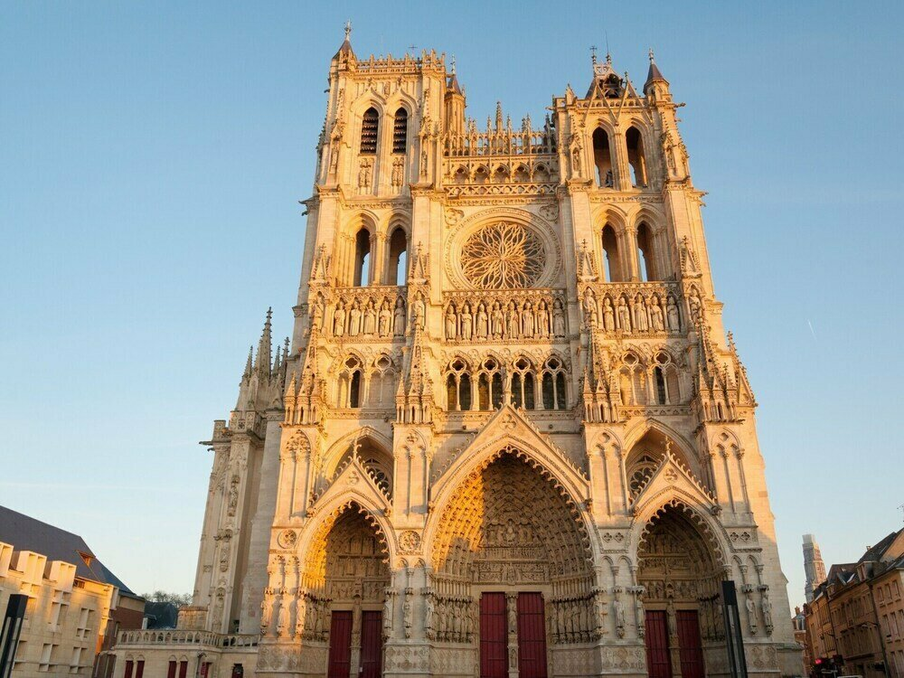
Крупнейший внутренний объём собора Франции. Классика высокой готики Иль-де-Франс.
Бурж
↑ Содержание
Адрес: Бурж | Стиль: Раннеготика (XII–XIII вв.) | Период: 1195–1250
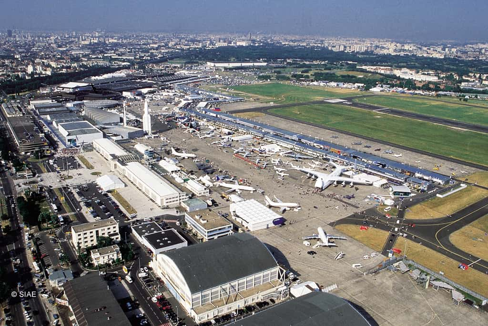
Пяти нефов без акцента на трансепте. Уникальная готическая планировка.
Лаон
↑ Содержание
Адрес: Лаон | Стиль: Раннеготика (XII–XIII вв.) | Период: 1160–1225
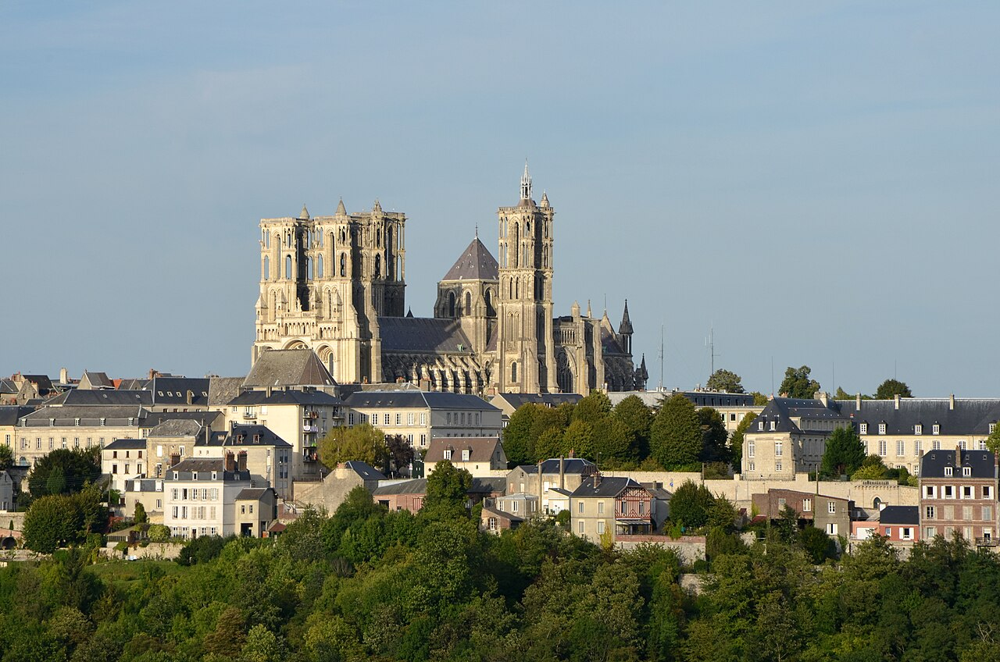
Пять башен на холме с скульптурными фигурами. Смелая раннеготическая композиция.
Нотр-Дам
↑ Содержание
Адрес: Париж | Стиль: Раннеготика (XII–XIII вв.) | Период: 1163–1345
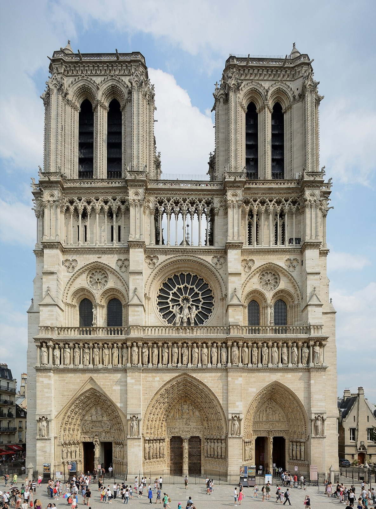
Католический собор на острове Сите. Символ Парижа и готической революции.
Нуайон
↑ Содержание
Адрес: Нуайон | Стиль: Раннеготика (XII–XIII вв.) | Период: 1150–1230
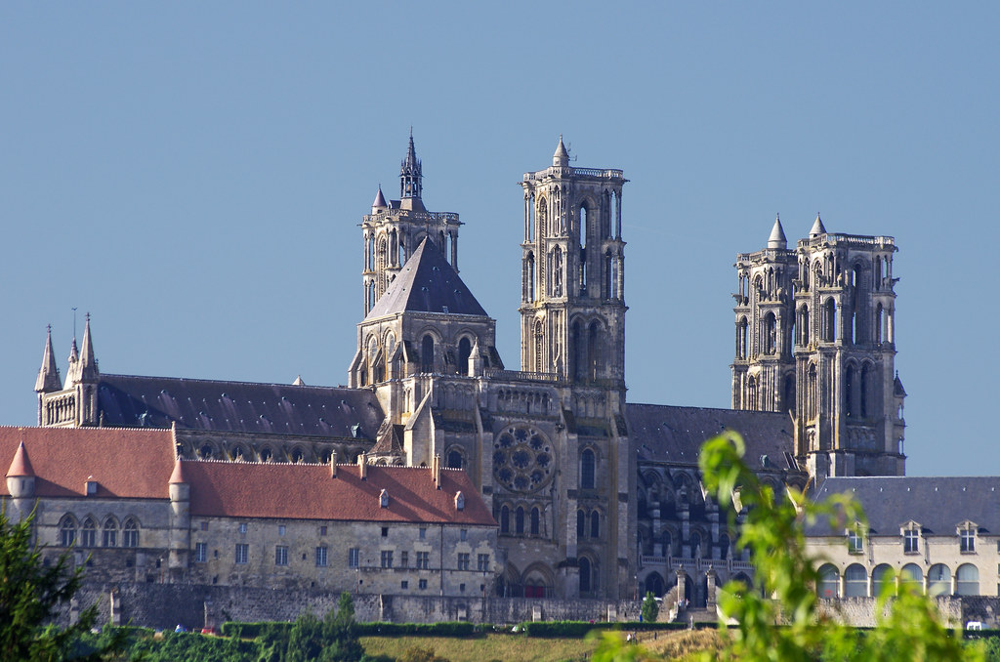
Переход от романского к готическому. Ранняя экспериментальная готика.
Реймс
↑ Содержание
Адрес: Реймс | Стиль: Раннеготика (XII–XIII вв.) | Период: 1211–1275
Собор коронаций французских монархов. Вершина раннеготической скульптуры.
Сен
↑ Содержание
Адрес: Сен | Стиль: Раннеготика (XII–XIII вв.) | Период: 1135–1164
Первый собор с раннеготическими элементами. Прототип для Шартра и Парижа.
Сен-Дени
↑ Содержание
Адрес: Сен-Дени | Стиль: Раннеготика (XII–XIII вв.) | Период: 1140–1144
Перестройка Сугерия с раннеготическими витражами. Рождение французской готики.
Сент-Шапель
↑ Содержание
Адрес: Париж | Стиль: Раннеготика (XII–XIII вв.) | Период: 1241–1248
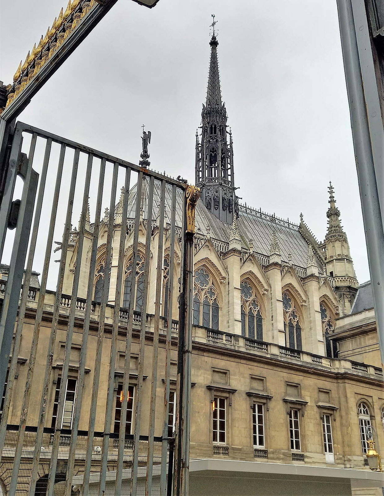
Королевская капелла Людовика IX. Стены из витража — образ радиантной готики.
Шартр
↑ Содержание
Адрес: Шартр | Стиль: Раннеготика (XII–XIII вв.) | Период: 1194–1220
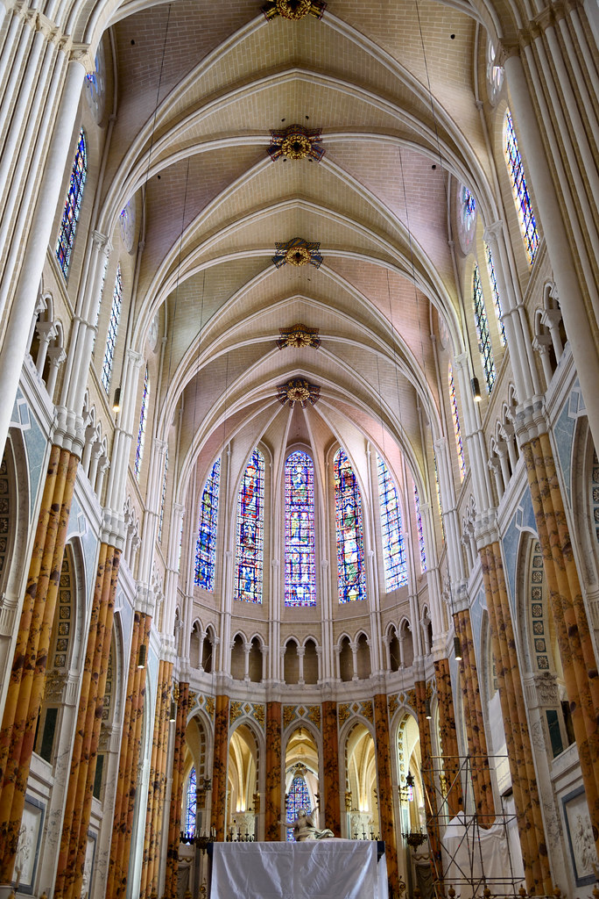
Собор с синими витражами. Эталон классической французской готики.
4. Радиантная и пламенеющая готика (XIV–XV вв.) ↑ Содержание
Световые стены и пламенеющие линии декора.
Бовуа
↑ Содержание
Адрес: Бовуа | Стиль: Радиантная и пламенеющая готика (XIV–XV вв.) | Период: 1225–1600
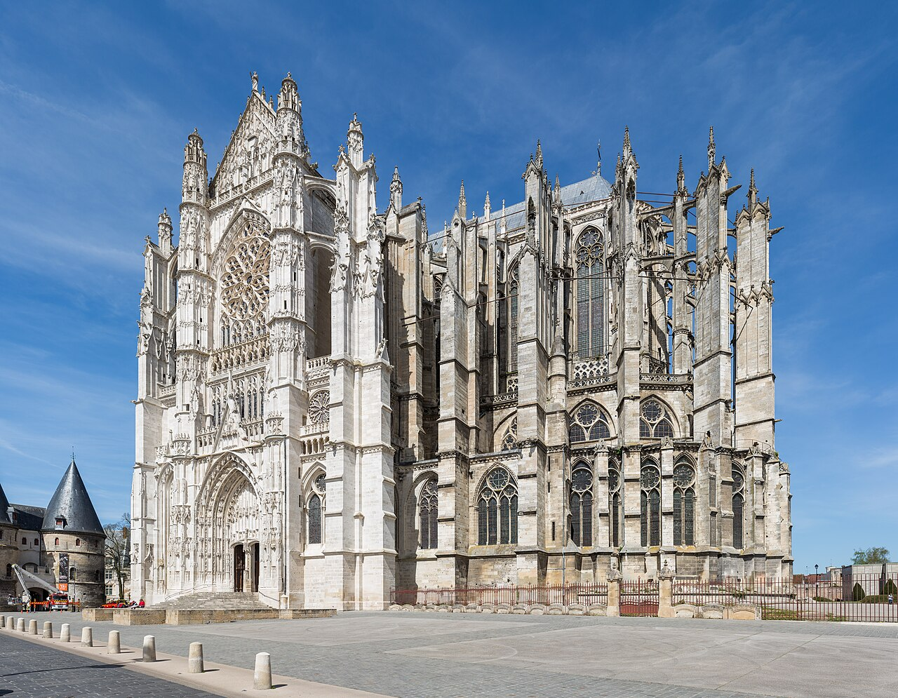
Самый высокий готический свод Европы. Амбициозная, но трагическая стройка.
Жак Кёр
↑ Содержание
Адрес: Бурж | Стиль: Радиантная и пламенеющая готика (XIV–XV вв.) | Период: 1443–1451
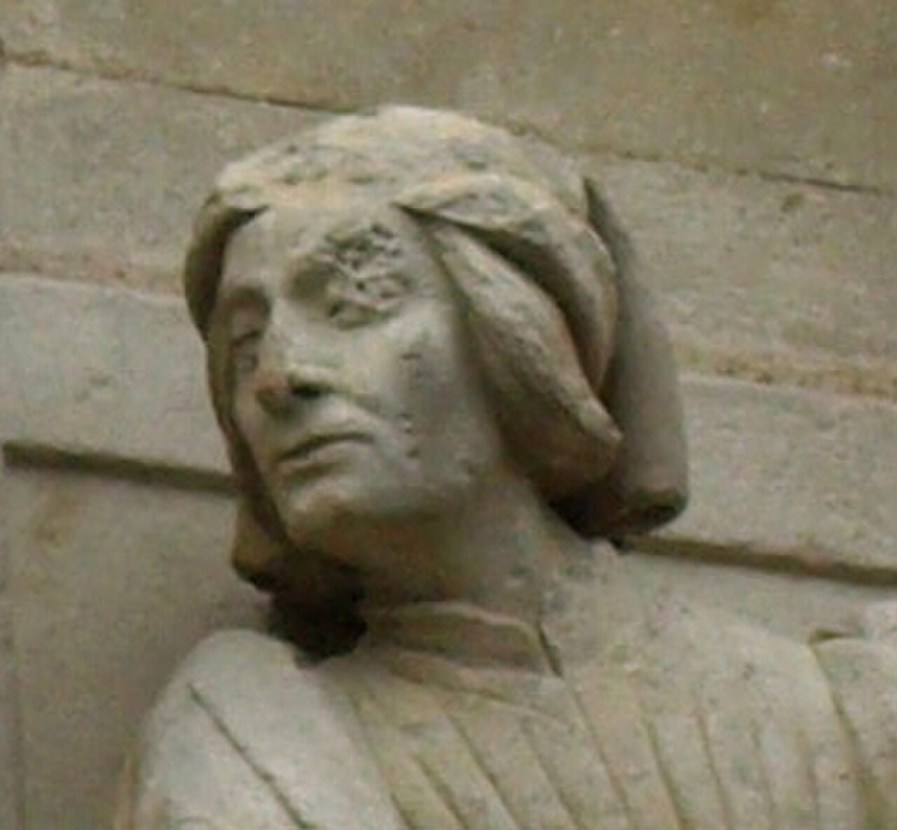
Особняк казначея Карла VII. Гражданская пламенеющая готика.
Сен-Маклу
↑ Содержание
Адрес: Руан | Стиль: Радиантная и пламенеющая готика (XIV–XV вв.) | Период: 1437–1521
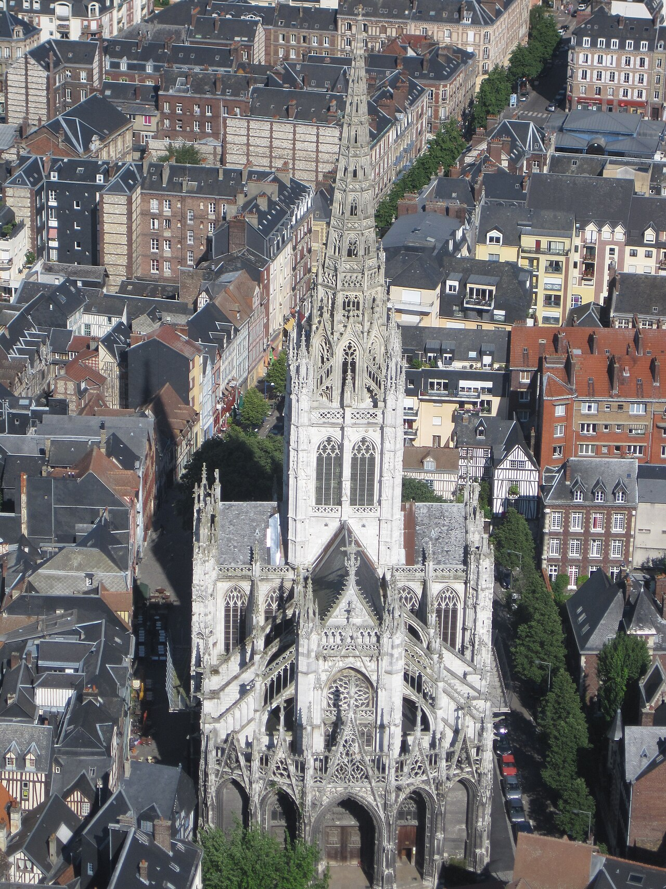
Пятипортальная церковь пламенеющей готики. Шедевр пламенеющего декора.
Сен-Уэн
↑ Содержание
Адрес: Руан | Стиль: Радиантная и пламенеющая готика (XIV–XV вв.) | Период: 1318–1500
Бенедиктинская церковь с витражами. Монументальная нормандская готика.
Собор Руана
↑ Содержание
Адрес: Руан | Стиль: Радиантная и пламенеющая готика (XIV–XV вв.)
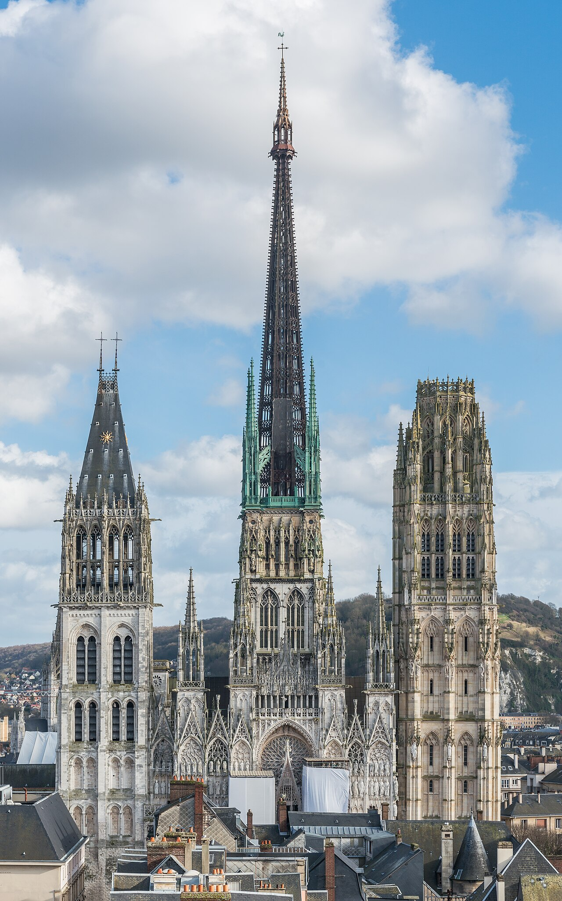
Фасад с пламенеющими линиями. Синтез готических фаз Нормандии.
Страсбург
↑ Содержание
Адрес: Страсбург | Стиль: Радиантная и пламенеющая готика (XIV–XV вв.)
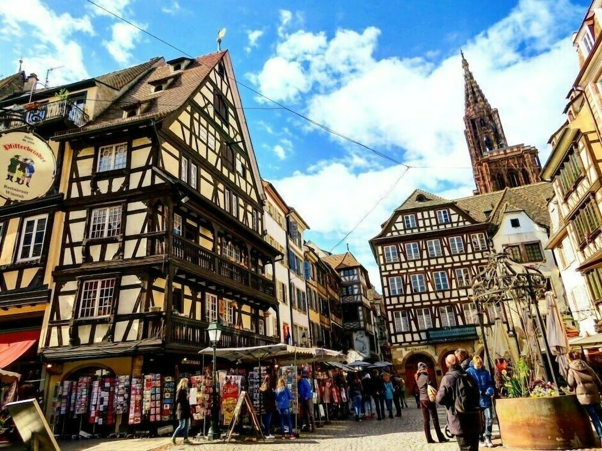
Один шпиль и астрономические часы. Вершина готики на востоке Франции.
5. Французское Возрождение (XVI в.) ↑ Содержание
Замки Луары и дворцы Валуа с итальянскими мотивами.
Азе-ле-Ридо
↑ Содержание
Адрес: Азе-ле-Ридо | Стиль: Французское Возрождение (XVI в.) | Период: 1518–1527
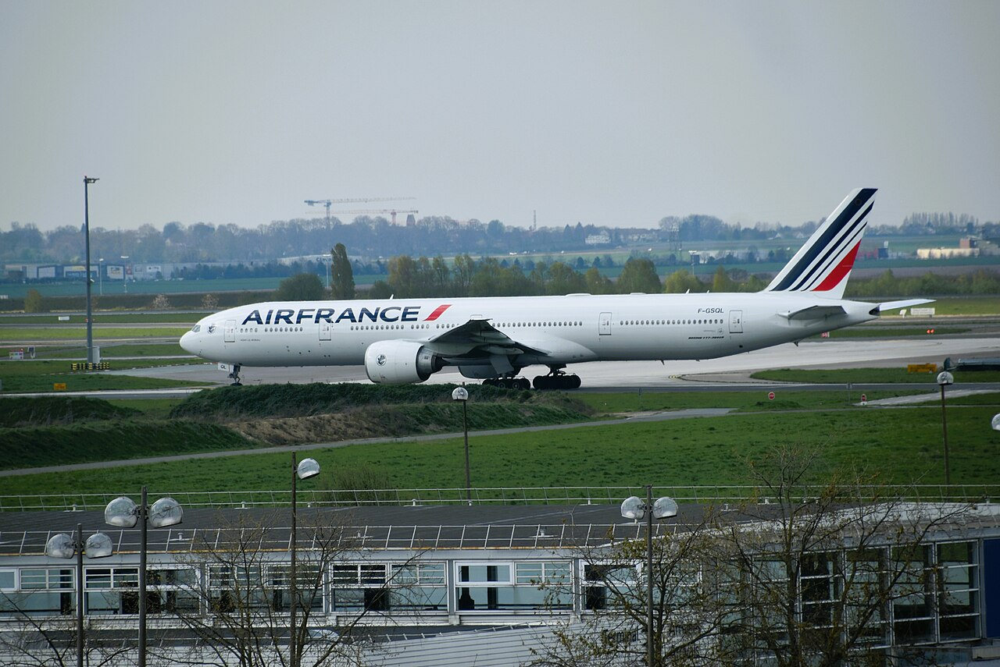
Замок-особняк отражается в воде. Раннее итальянизирующее зодчество.
Блуа
↑ Содержание
Адрес: Блуа | Стиль: Французское Возрождение (XVI в.)
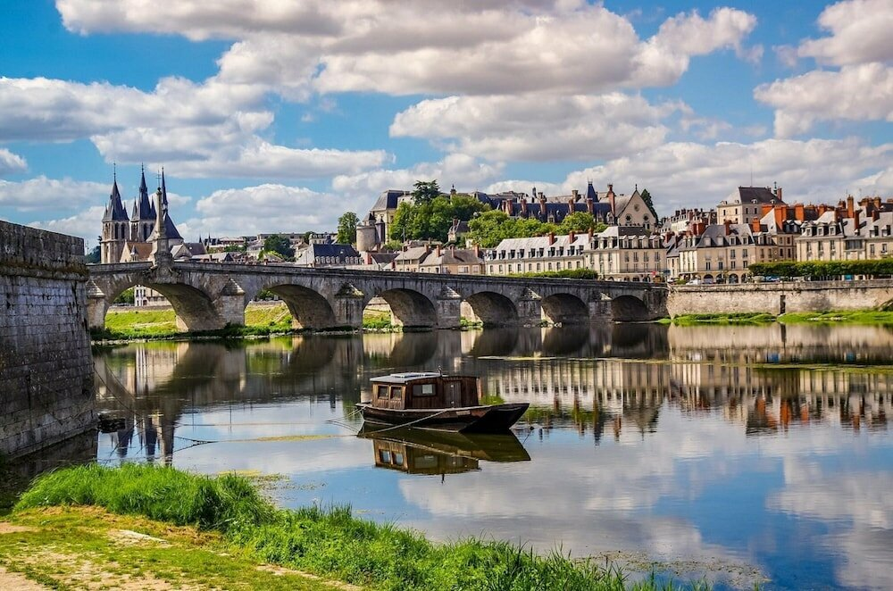
Смешение стилей от средневековья до Возрождения. История монархии в камне.
Лувр (флигель Леско)
↑ Содержание
Адрес: Париж | Стиль: Французское Возрождение (XVI в.) | Период: 1546–1551
Первый классический фасад Лувра. Возрождение в столице.
Фонтенбло
↑ Содержание
Адрес: Фонтенбло | Стиль: Французское Возрождение (XVI в.)
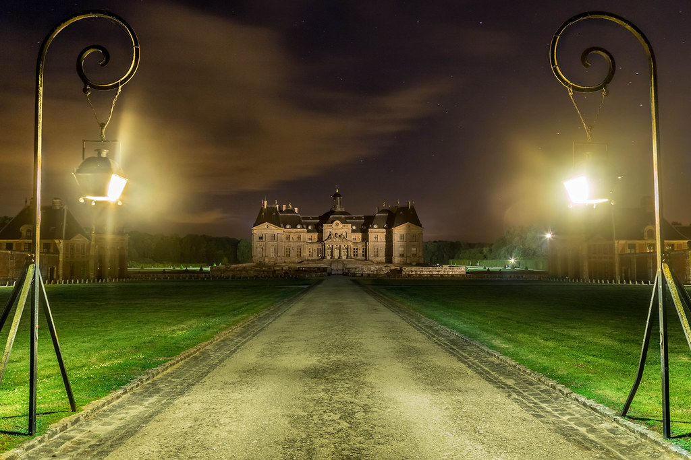
Дворец с фресками школы Фонтенбло. Синтез итальянского и французского стиля.
Шамбор
↑ Содержание
Адрес: Шамбор | Стиль: Французское Возрождение (XVI в.) | Период: 1519–1547
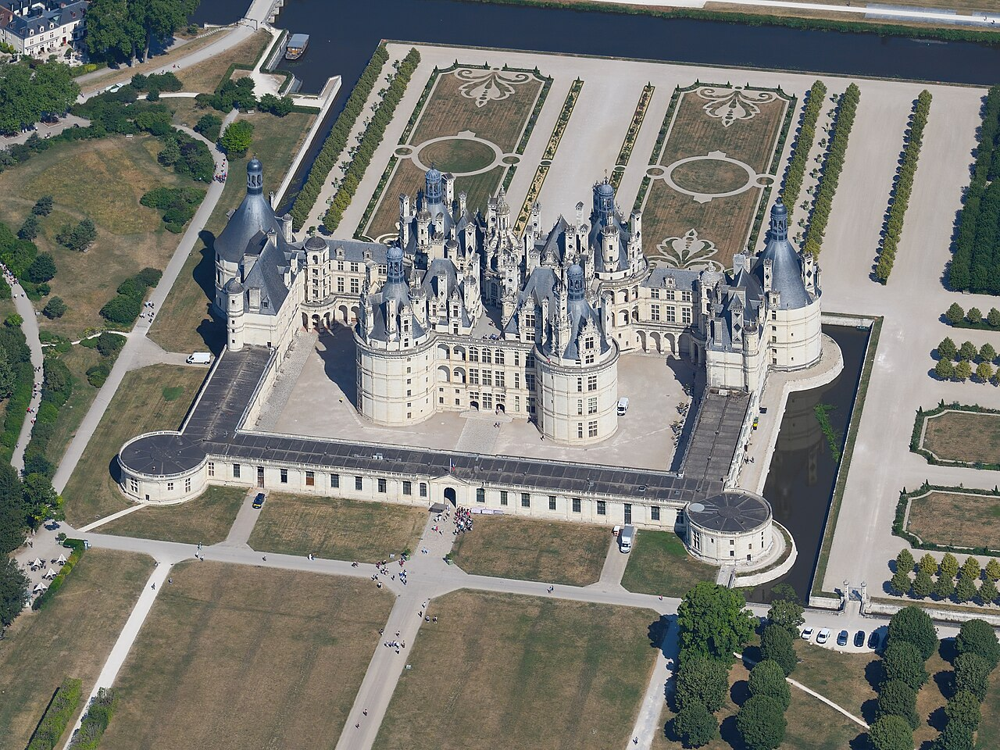
Замок Франциска I с двойной винтовой лестницей. Икона французского Возрождения.
Шенонсо
↑ Содержание
Адрес: Шенонсо | Стиль: Французское Возрождение (XVI в.) | Период: 1513–1521
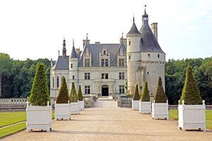
Замок на реке Шер с галереей Дианы. Элегантность луарских замков.
Экуан
↑ Содержание
Адрес: Экуан | Стиль: Французское Возрождение (XVI в.) | Период: 1538–1555
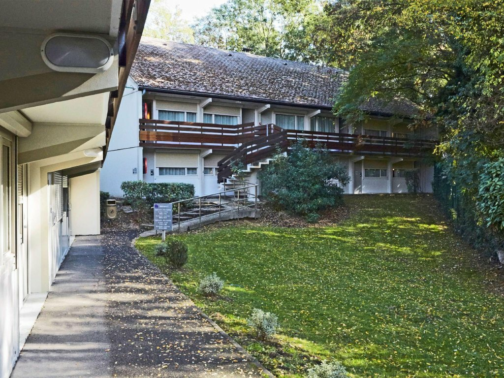
Замок Анны де Монморанси. Образец ренессансного особняка.
6. Классицизм эпохи Людовика XIII (XVII в., первая половина) ↑ Содержание
Сдержанный классицизм и кирпично-каменные фасады.
Валь-де-Грас
↑ Содержание
Адрес: Париж | Стиль: Классицизм эпохи Людовика XIII (XVII в., первая половина) | Период: 1645–1665
Купольная церковь Анны Австрии. Классицизм перед Версалем.
Версаль (ранний)
↑ Содержание
Адрес: Версаль | Стиль: Классицизм эпохи Людовика XIII (XVII в., первая половина) | Период: 1624–1661
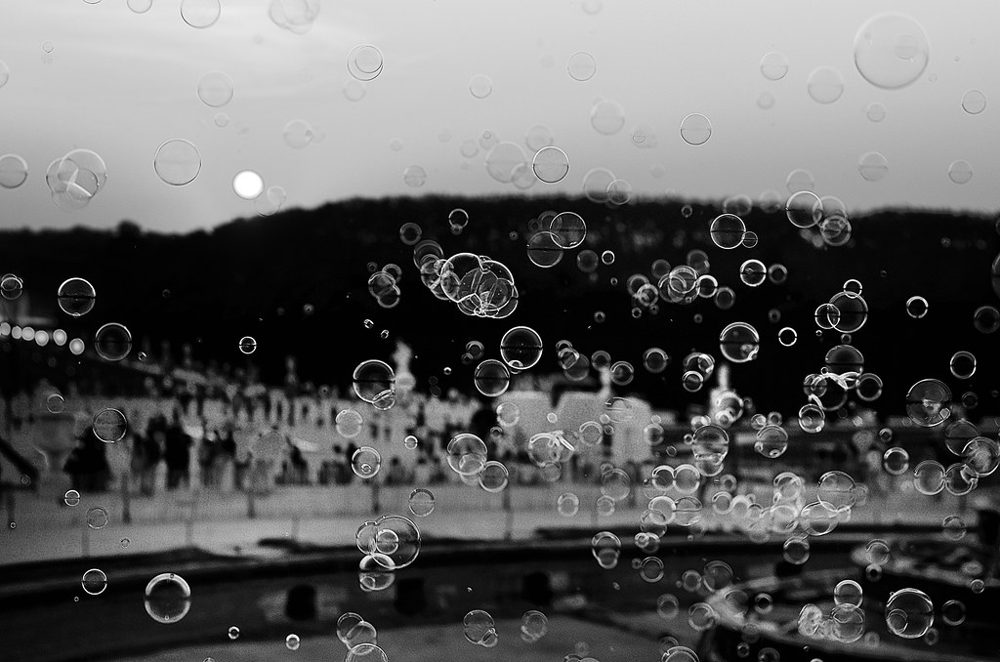
Перестройка Людовика XIII из охотничьего замка. Зачаток великого дворцового ансамбля.
Люксембургский дворец
↑ Содержание
Адрес: Париж | Стиль: Классицизм эпохи Людовика XIII (XVII в., первая половина) | Период: 1615–1645
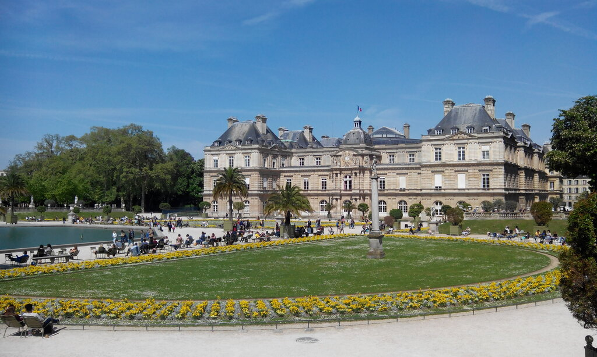
Палац для Марии Медичи. Переход к абсолютистскому классицизму.
Отель Сюлли
↑ Содержание
Адрес: Париж | Стиль: Классицизм эпохи Людовика XIII (XVII в., первая половина) | Период: 1624–1630
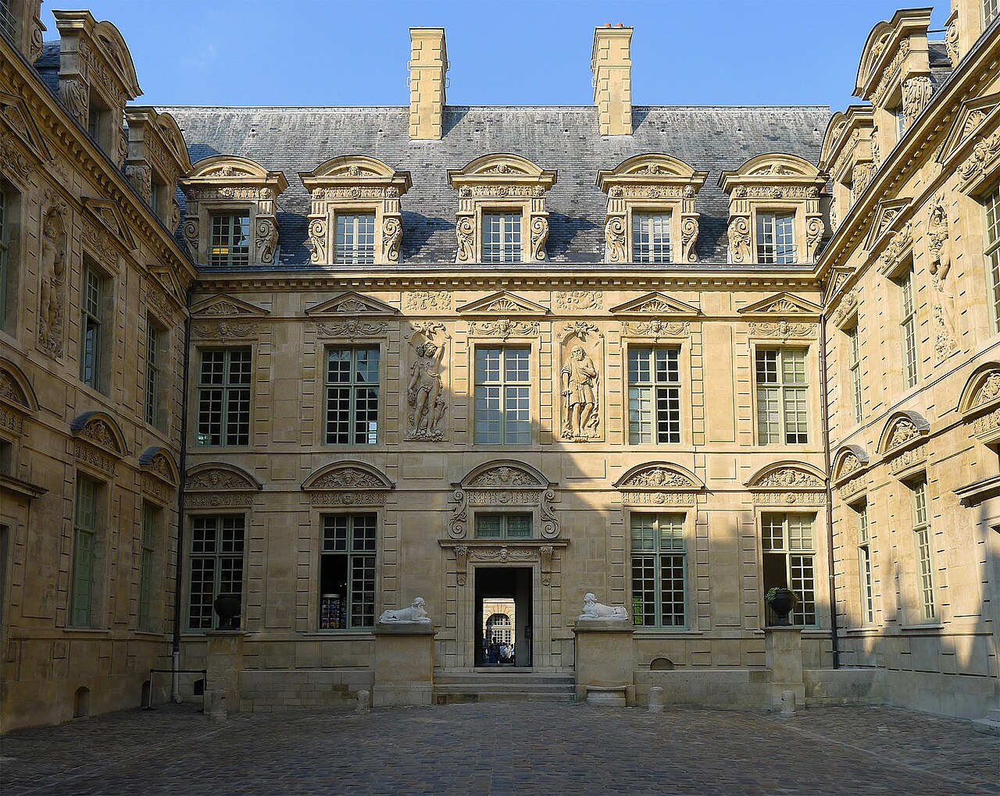
Особняк с внутренним двором. Тип парижского hôtel particulier.
Пале-Рояль
↑ Содержание
Адрес: Париж | Стиль: Классицизм эпохи Людовика XIII (XVII в., первая половина) | Период: 1633–1639
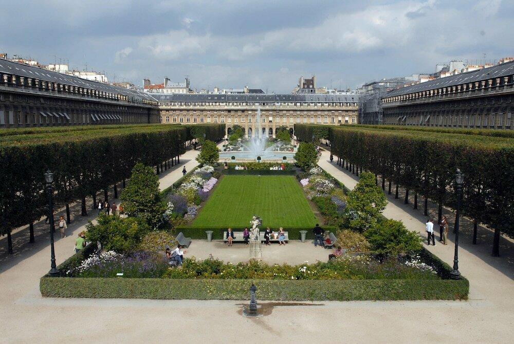
Дворец Ришельё и сад. Городская резиденция элиты.
Площадь Вогезов
↑ Содержание
Адрес: Париж | Стиль: Классицизм эпохи Людовика XIII (XVII в., первая половина) | Период: 1605–1612
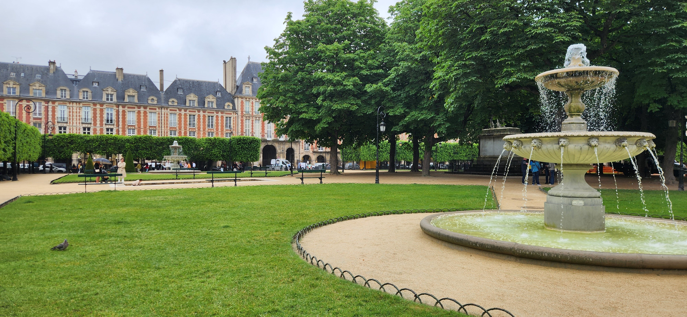
Первый планировочный квадрат Парижа. Классическая симметрия раннего XVII в.
Сен-Поль-Сен-Луи
↑ Содержание
Адрес: Париж | Стиль: Классицизм эпохи Людовика XIII (XVII в., первая половина) | Период: 1627–1641
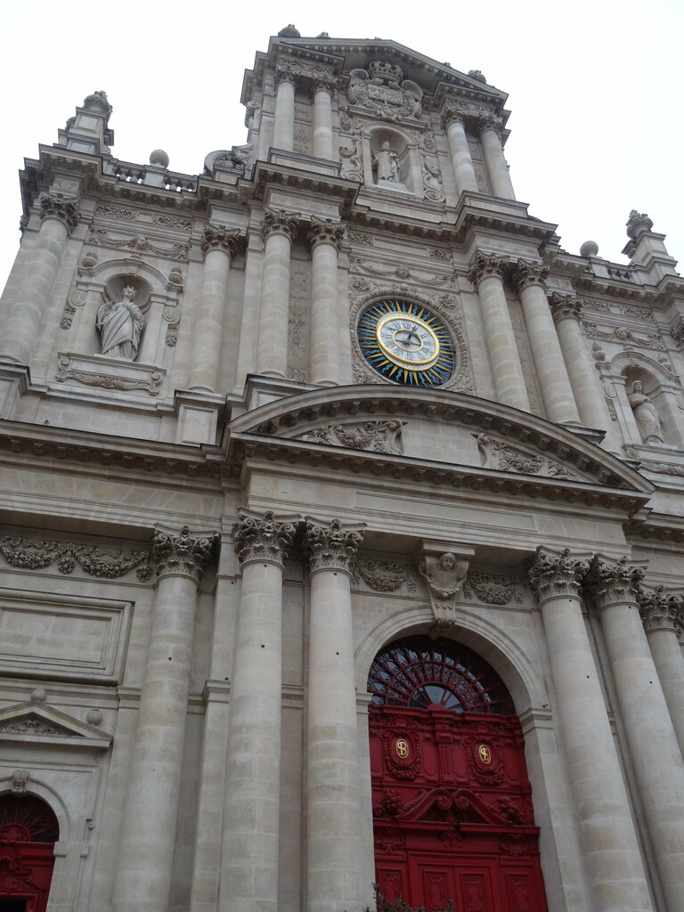
Первый парижский барочный фасад. Римские мотивы в парижском храме.
7. Классицизм Людовика XIV (вторая половина XVII в.) ↑ Содержание
Версаль и осевые ансамбли абсолютной монархии.
Версаль
↑ Содержание
Адрес: Версаль | Стиль: Классицизм Людовика XIV (вторая половина XVII в.) | Период: 1661–1710
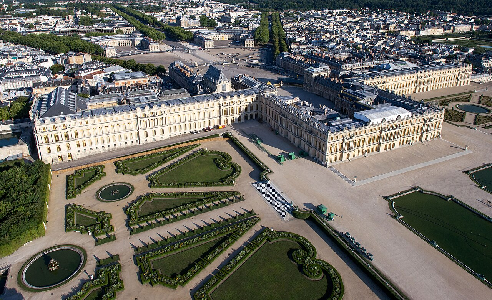
Резиденция Людовика XIV — символ абсолютизма. Вершина французского классицизма.
Во-ле-Виконт
↑ Содержание
Адрес: Мелун | Стиль: Классицизм Людовика XIV (вторая половина XVII в.) | Период: 1658–1661
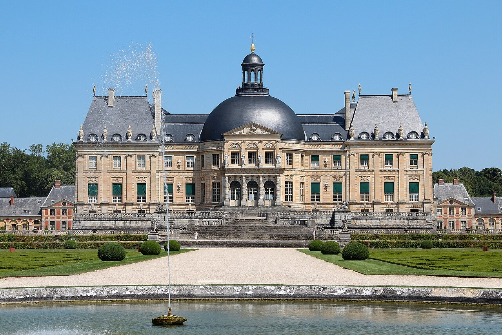
Замок Николя Фуке, прообраз Версаля. Ле Нотр и Ле Во — ансамбль сада и дворца.
Гран Трианон
↑ Содержание
Адрес: Версаль | Стиль: Классицизм Людовика XIV (вторая половина XVII в.) | Период: 1687
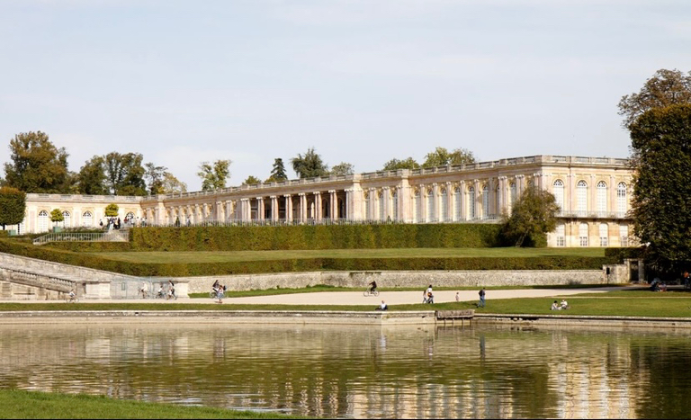
Мраморный павильон для отдыха короля. Изящный классицизм Версаля.
Инвалиды
↑ Содержание
Адрес: Париж | Стиль: Классицизм Людовика XIV (вторая половина XVII в.) | Период: 1670–1676
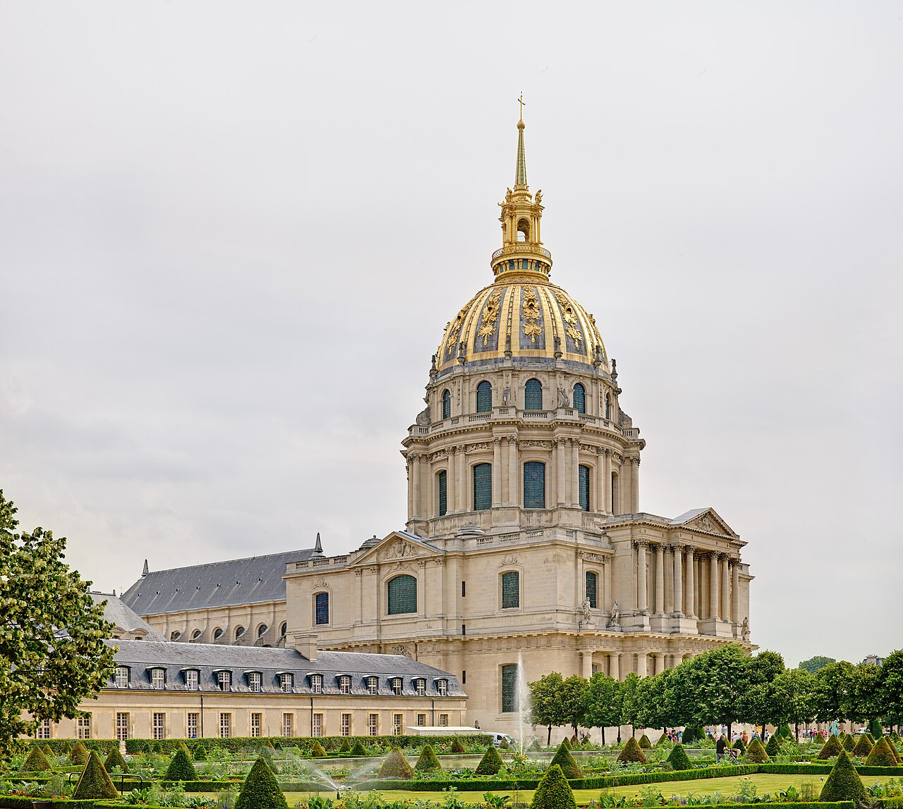
Госпиталь и купол для ветеранов. Монументальная церковная архитектура.
Институт Франции
↑ Содержание
Адрес: Париж | Стиль: Классицизм Людовика XIV (вторая половина XVII в.) | Период: 1663–1688
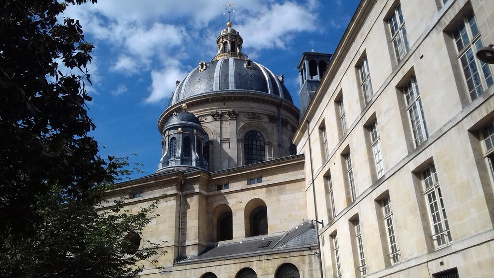
Коллегия четырёх наций. Академическая архитектура Людовика XIV.
Колоннада Лувра
↑ Содержание
Адрес: Париж | Стиль: Классицизм Людовика XIV (вторая половина XVII в.) | Период: 1665–1680
Восточный фасад Лувра Перро. Канон французского классицизма.
Марли
↑ Содержание
Адрес: Марли | Стиль: Классицизм Людовика XIV (вторая половина XVII в.) | Период: 1679–1684
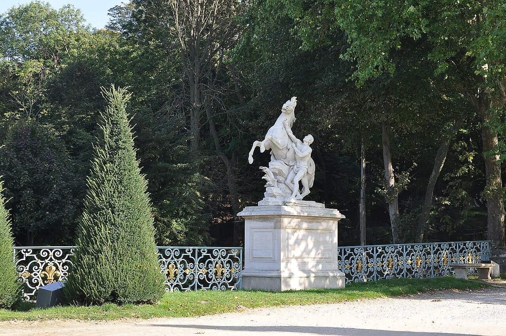
Загородный павильон с машиной Марли. Инженерия и парадный двор.
Оранжерея Версаля
↑ Содержание
Адрес: Версаль | Стиль: Классицизм Людовика XIV (вторая половина XVII в.) | Период: 1684–1686
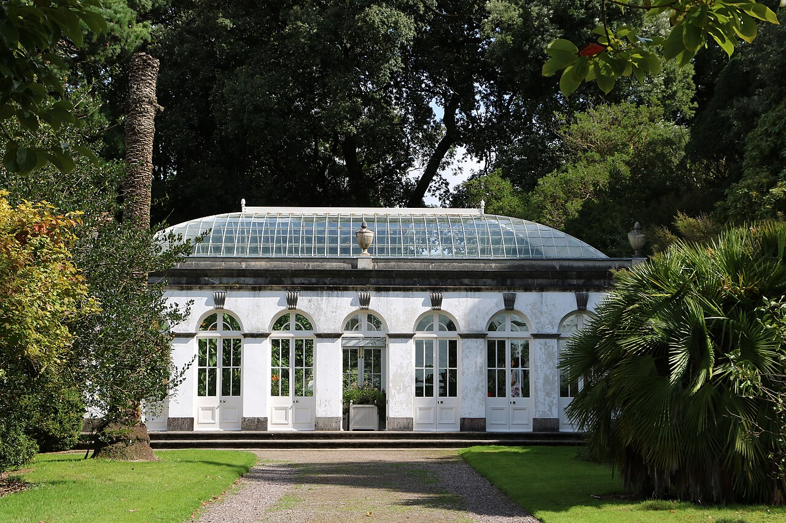
Подземная оранжерея Ле Нотра. Садово-палатная инфраструктура.
Площадь Вандом
↑ Содержание
Адрес: Париж | Стиль: Классицизм Людовика XIV (вторая половина XVII в.) | Период: 1699
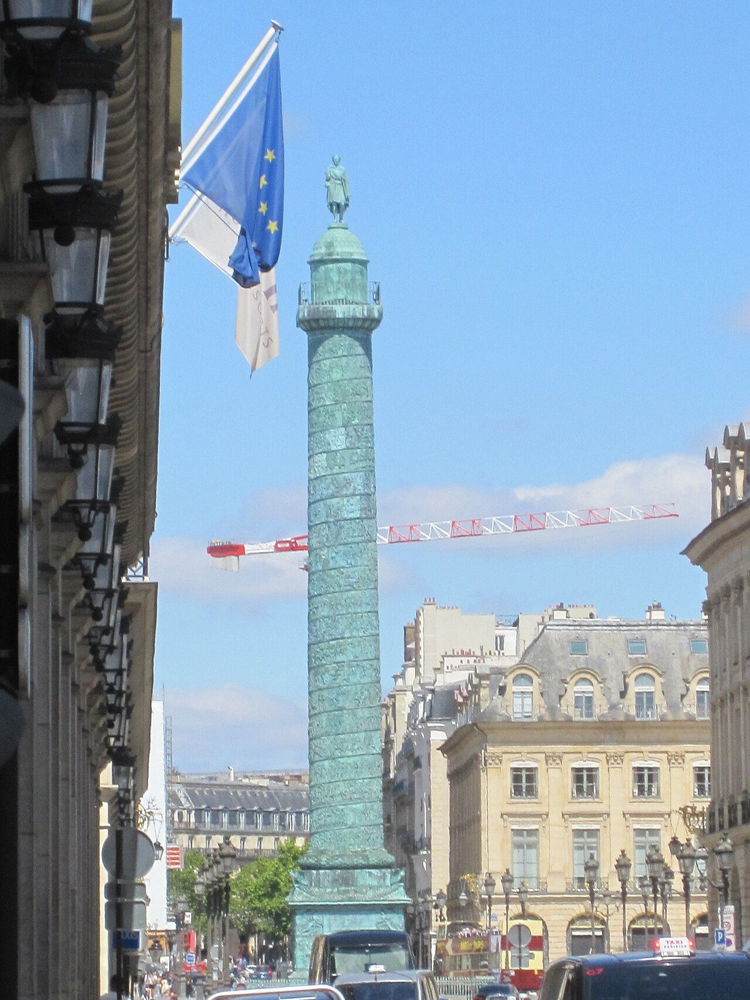
Октагональная площадь с колонной. Городская классическая планировка.
Сен-Сюльпис
↑ Содержание
Адрес: Париж | Стиль: Классицизм Людовика XIV (вторая половина XVII в.) | Период: 1646–1745
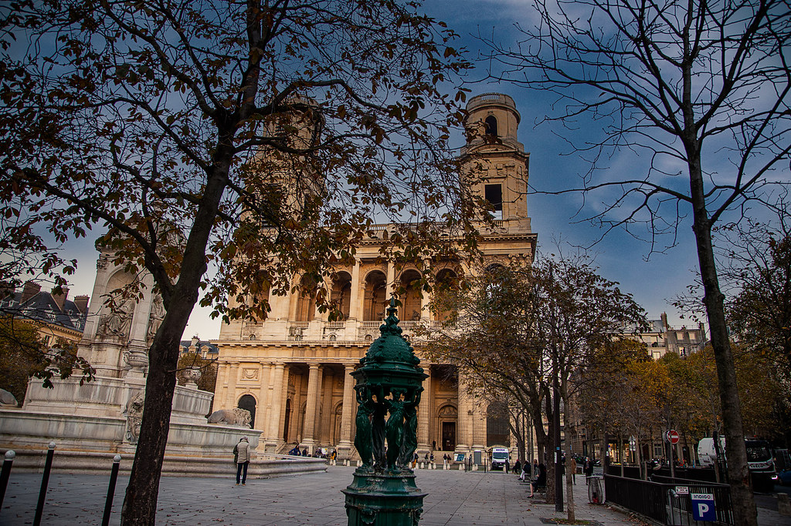
Двухбашенный классический собор. Парижский классицизм XVII в.
8. Регентство и рококо (начало XVIII в.) ↑ Содержание
Изящные интерьеры и асимметричный декор.
Отель Матиньон
↑ Содержание
Адрес: Париж | Стиль: Регентство и рококо (начало XVIII в.) | Период: 1720–1725
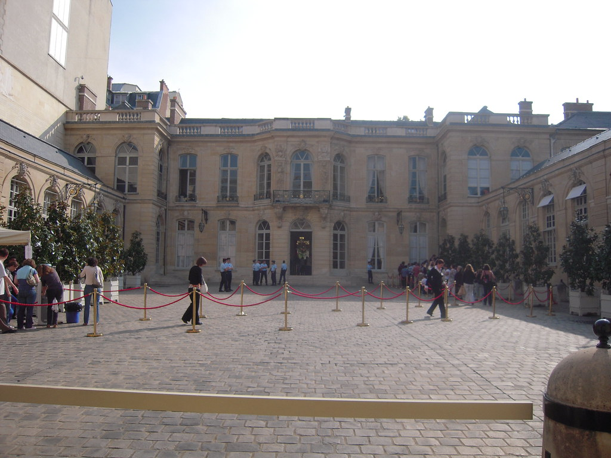
Особняк с элегантным садом. Парижское регентство.
Отель Субиз
↑ Содержание
Адрес: Париж | Стиль: Регентство и рококо (начало XVIII в.) | Период: 1704–1709
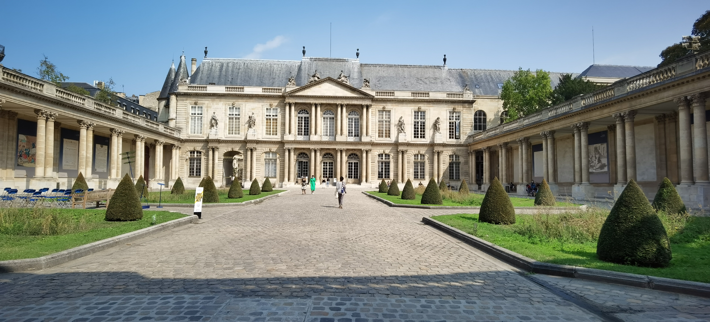
Особняк с рокайльными интерьерами. Переход к рококо.
Отель Тулуз
↑ Содержание
Адрес: Париж | Стиль: Регентство и рококо (начало XVIII в.) | Период: 1732
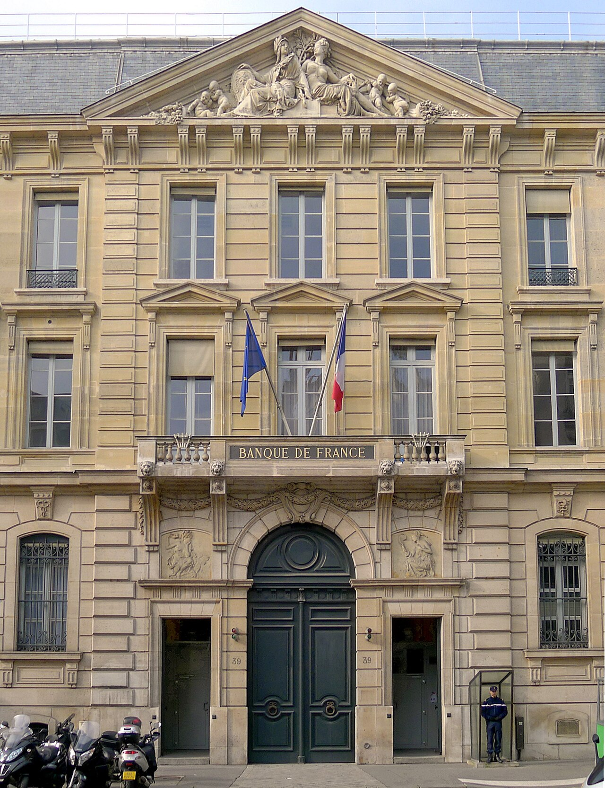
Особняк графов Тулуз на берегу Сены. Городская архитектура регентства.
Площадь Станислава
↑ Содержание
Адрес: Нанси | Стиль: Регентство и рококо (начало XVIII в.) | Период: 1752–1756
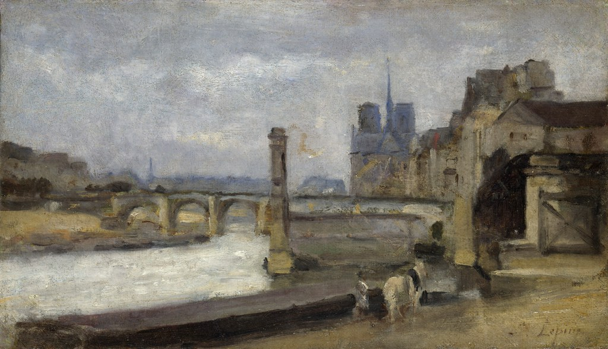
Классическая площадь герцога Станислава Лешчинского. Регентский классицизм Лотарингии.
Салон Геркулеса
↑ Содержание
Адрес: Версаль | Стиль: Регентство и рококо (начало XVIII в.) | Период: 1730–1736
Парадный зал Версаля Людовика XV. Роскошь регентского рококо.
Шантильи
↑ Содержание
Адрес: Шантильи | Стиль: Регентство и рококо (начало XVIII в.) | Период: 1718–1722
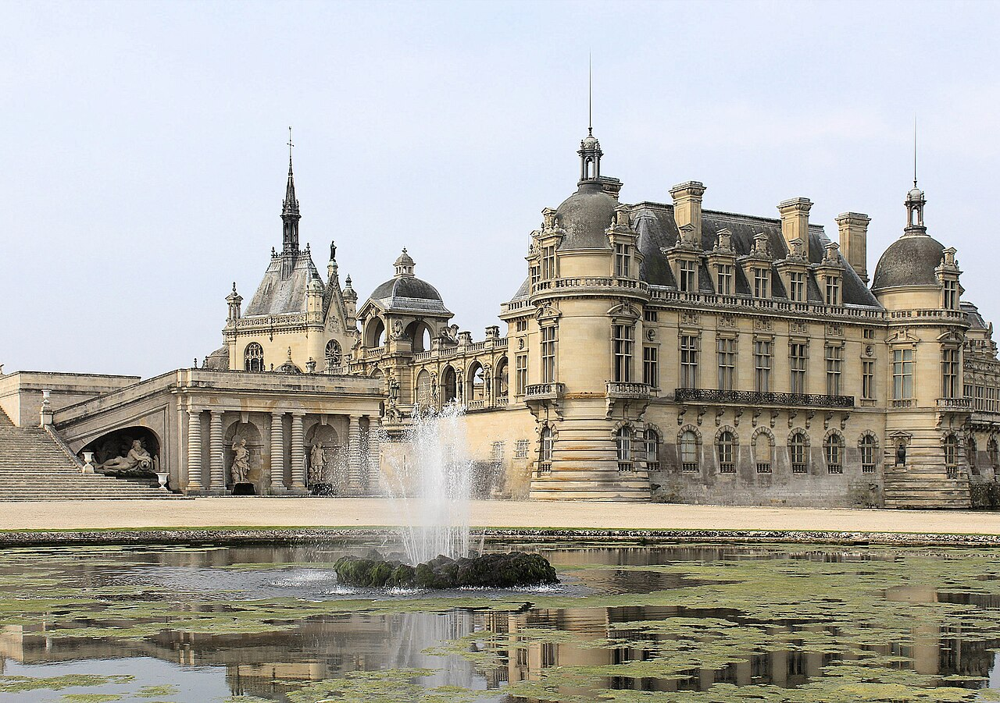
Большая Синжерия — росписи регентства. Светский декор эпохи регентства.
9. Рококо Людовика XV (середина XVIII в.) ↑ Содержание
Парижские особняки и павильоны с рокайльным орнаментом.
Военная школа
↑ Содержание
Адрес: Париж | Стиль: Рококо Людовика XV (середина XVIII в.) | Период: 1756–1773
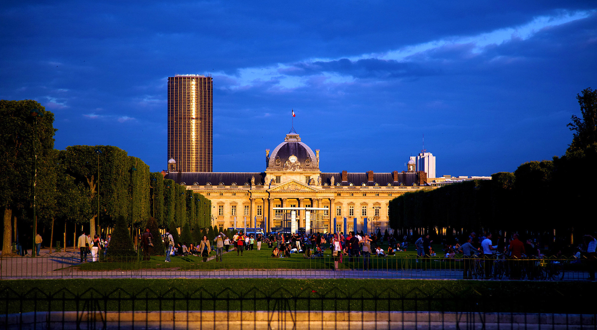
Военная академия у Эйфелевой башни. Рококо и неоклассический переход.
Компьень
↑ Содержание
Адрес: Компьень | Стиль: Рококо Людовика XV (середина XVIII в.) | Период: 1751–1788
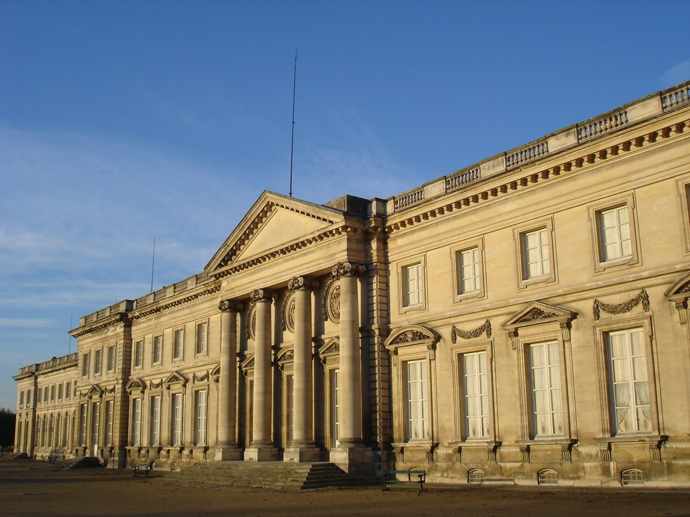
Загородный дворец Людовика XV. Рококо и неоклассика.
Малый Трианон
↑ Содержание
Адрес: Версаль | Стиль: Рококо Людовика XV (середина XVIII в.) | Период: 1762–1768
Павильон Марии-Антуанетты. Изящный рококо Версаля.
Опера Версаля
↑ Содержание
Адрес: Версаль | Стиль: Рококо Людовика XV (середина XVIII в.) | Период: 1769–1770
Оперный театр Габриэля. Светская архитектура рококо.
Площадь Ройяль
↑ Содержание
Адрес: Реймс | Стиль: Рококо Людовика XV (середина XVIII в.) | Период: 1757–1763
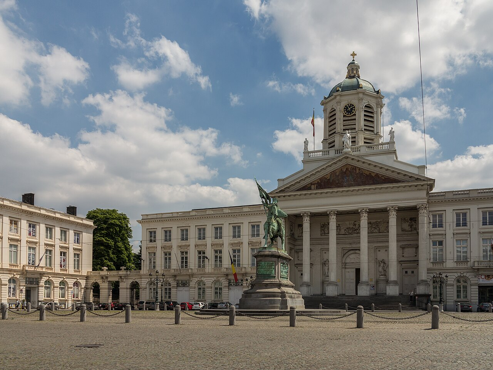
Классическая площадь с единым фасадом. Провинциальный рококо.
Площадь Согласия
↑ Содержание
Адрес: Париж | Стиль: Рококо Людовика XV (середина XVIII в.) | Период: 1755–1772
Площадь Людовика XV с обелиском. Монументальная городская площадь.
10. Неоклассицизм Людовика XVI (конец XVIII в.) ↑ Содержание
Античные мотивы и строгая симметрия перед революцией.
Маленький Трианон
↑ Содержание
Адрес: Версаль | Стиль: Неоклассицизм Людовика XVI (конец XVIII в.) | Период: 1783–1786
Деревенский ансамбль Марии-Антуанетты. Неоклассика и пастораль.
Одеон
↑ Содержание
Адрес: Париж | Стиль: Неоклассицизм Людовика XVI (конец XVIII в.) | Период: 1779–1782
Неоклассический театр Пейрре. Публичная неоклассическая архитектура.
Отель де Сальм
↑ Содержание
Адрес: Париж | Стиль: Неоклассицизм Людовика XVI (конец XVIII в.) | Период: 1782–1788
Дворец Легиона почёта. Неоклассический особняк.
Пале Бурбон
↑ Содержание
Адрес: Париж | Стиль: Неоклассицизм Людовика XVI (конец XVIII в.) | Период: 1728–1789
Дворец, сегодня Национальное собрание. Неоклассический парадный фасад.
Рамбуйе
↑ Содержание
Адрес: Рамбуйе | Стиль: Неоклассицизм Людовика XVI (конец XVIII в.) | Период: 1783–1788
Загородный дворец Людовика XVI. Королевская неоклассика.
Суффло — Пантеон
↑ Содержание
Адрес: Париж | Стиль: Неоклассицизм Людовика XVI (конец XVIII в.) | Период: 1758–1790
Церковь Суффло, ставшая мавзолеем. Неоклассика перед революцией.
11. Революция и ампир (конец XVIII — начало XIX вв.) ↑ Содержание
Триумфальные арки и монументальность Наполеоновской эпохи.
Арка Каррусель
↑ Содержание
Адрес: Париж | Стиль: Революция и ампир (конец XVIII — начало XIX вв.) | Период: 1806–1808
Триумфальная арка у Лувра. Имперская парадная архитектура.
Арка Триумфа
↑ Содержание
Адрес: Париж | Стиль: Революция и ампир (конец XVIII — начало XIX вв.) | Период: 1806–1836
Триумфальная арка Наполеона. Символ имперской монументальности.
Биржа Бордо
↑ Содержание
Адрес: Бордо | Стиль: Революция и ампир (конец XVIII — начало XIX вв.) | Период: 1730–1775
Классический фасад биржи. Имперская гражданская архитектура.
Колонна Вандома
↑ Содержание
Адрес: Париж | Стиль: Революция и ампир (конец XVIII — начало XIX вв.) | Период: 1810
Колонна из пушек Аустерлица. Имперская пропаганда в камне.
Мадлен
↑ Содержание
Адрес: Париж | Стиль: Революция и ампир (конец XVIII — начало XIX вв.) | Период: 1806–1842
Храм в форме римского мавзолея. Имперский неоклассицизм.
Мальмезон
↑ Содержание
Адрес: Рюэй | Стиль: Революция и ампир (конец XVIII — начало XIX вв.) | Период: 1800–1802
Резиденция Жозефины Бонапарта. Имперский загородный стиль.
Пантеон
↑ Содержание
Адрес: Париж | Стиль: Революция и ампир (конец XVIII — начало XIX вв.) | Период: 1791
Мавзолей великих людей республики. Революционная переосмысленность.
12. Реставрация и Июльская монархия (1815–1848) ↑ Содержание
Эклектика и новые институциональные здания.
Библиотека Сент-Женевьев
↑ Содержание
Адрес: Париж | Стиль: Реставрация и Июльская монархия (1815–1848) | Период: 1843–1851
Читальный зал Лабруста с железными конструкциями. Рационализм и классика XIX в.
Нотр-Дам-де-ла-Гард
↑ Содержание
Адрес: Марсель | Стиль: Реставрация и Июльская монархия (1815–1848) | Период: 1853–1864
Базилика на холме с золотым статуей. Романско-византийская эклектика.
Ратуша Реймса
↑ Содержание
Адрес: Реймс | Стиль: Реставрация и Июльская монархия (1815–1848) | Период: 1847–1862
Ратуша в неоренессансном стиле. Июльская монархия и гражданская архитектура.
Сен-Луи
↑ Содержание
Адрес: Версаль | Стиль: Реставрация и Июльская монархия (1815–1848) | Период: 1740–1754
Католический собор Версаля. Неоклассика реставрации.
13. Второе имперское зодчество (1852–1870) ↑ Содержание
Мансарды, ордер и парадные фасады Наполеона III.
Гар дю Нор
↑ Содержание
Адрес: Париж | Стиль: Второе имперское зодчество (1852–1870) | Период: 1861–1865
Главный северный вокзал Парижа. Транспортная архитектура империи.
Лувр (флигель Висконти)
↑ Содержание
Адрес: Париж | Стиль: Второе имперское зодчество (1852–1870) | Период: 1852–1857
Расширение Лувра при Наполеоне III. Музейная архитектура империи.
Опера Гарнье
↑ Содержание
Адрес: Париж | Стиль: Второе имперское зодчество (1852–1870) | Период: 1861–1875
Оперный театр Наполеона III. Вершина второй империи.
Отель дю Лувр
↑ Содержание
Адрес: Париж | Стиль: Второе имперское зодчество (1852–1870) | Период: 1855–1857
Роскошный отель у Лувра. Имперский туризм и роскошь.
Пале д'Орсэ
↑ Содержание
Адрес: Париж | Стиль: Второе имперское зодчество (1852–1870) | Период: 1810–1838
Дворец, позже ставший музеем. Имперская парадная архитектура.
Ратуша Парижа
↑ Содержание
Адрес: Париж | Стиль: Второе имперское зодчество (1852–1870) | Период: 1874–1884
Ратуша после пожара 1871 года. Имперская гражданская архитектура.
Сен-Огюстен
↑ Содержание
Адрес: Париж | Стиль: Второе имперское зодчество (1852–1870) | Период: 1860–1871
Церковь с металлическими конструкциями Буало. Имперская церковная архитектура.
14. Османизация Парижа (1853–1870) ↑ Содержание
Единые фасады бульваров, парки и инженерная инфраструктура.
Буа де Булонь
↑ Содержание
Адрес: Париж | Стиль: Османизация Парижа (1853–1870) | Период: 1852–1858
Парк с озёрами и дорожками. Загородная зелень в городе.
Бульвар Османа
↑ Содержание
Адрес: Париж | Стиль: Османизация Парижа (1853–1870) | Период: 1850–1870
Типичные фасады бульваров Османа. Единый ритм парижской застройки.
Бют-Шомон
↑ Содержание
Адрес: Париж | Стиль: Османизация Парижа (1853–1870) | Период: 1864–1867
Парк с искусственными скалами и мостом. Османизация зелёных зон.
Гар де Лион
↑ Содержание
Адрес: Париж | Стиль: Османизация Парижа (1853–1870) | Период: 1895–1902
Вокзал с башней Тур Монпарнас рядом. Транспортная инфраструктура.
Иль де ла Сите
↑ Содержание
Адрес: Париж | Стиль: Османизация Парижа (1853–1870) | Период: 1853–1870
Реконструкция исторического центра. Сохранение и модернизация.
Канал Сен-Мартен
↑ Содержание
Адрес: Париж | Стиль: Османизация Парижа (1853–1870) | Период: 1825–1860
Канал с крытыми секциями. Инженерная османизация.
Площадь Звезды
↑ Содержание
Адрес: Париж | Стиль: Османизация Парижа (1853–1870) | Период: 1854–1858
Радиальная площадь с Аркой Триумфа. Монументальный городской центр.
Типичный дом Османа
↑ Содержание
Адрес: Париж | Стиль: Османизация Парижа (1853–1870) | Период: 1850–1870
Каменный фасад, мансарда, балконы. Архетип парижского дома.
Улица Оперы
↑ Содержание
Адрес: Париж | Стиль: Османизация Парижа (1853–1870) | Период: 1858–1876
Прямая ось от Лувра к Опере. Городская перспектива Османа.
Центральные рынки
↑ Содержание
Адрес: Париж | Стиль: Османизация Парижа (1853–1870) | Период: 1851–1870
Стеклянно-металлические павильоны Балларда. Рационализм и рынок.
15. Прекрасная эпоха (конец XIX — начало XX вв.) ↑ Содержание
Грандиозные выставки и парадная архитектура Третьей республики.
Гар д'Орсэ
↑ Содержание
Адрес: Париж | Стиль: Прекрасная эпоха (конец XIX — начало XX вв.) | Период: 1898–1900
Вокзал, ставший музеем. Индустриальная белль-эпок.
Гран-Пале
↑ Содержание
Адрес: Париж | Стиль: Прекрасная эпоха (конец XIX — начало XX вв.) | Период: 1897–1900
Выставочный дворец для Всемирной выставки. Вершина прекрасной эпохи.
Казино Монако
↑ Содержание
Адрес: Монако | Стиль: Прекрасная эпоха (конец XIX — начало XX вв.) | Период: 1858–1910
Роскошный курорт Шарля Гарнье. Светская архитектура курорта.
Пти-Пале
↑ Содержание
Адрес: Париж | Стиль: Прекрасная эпоха (конец XIX — начало XX вв.) | Период: 1897–1900
Музей изящных искусств. Изящная белль-эпок.
Сакре-Кёр
↑ Содержание
Адрес: Париж | Стиль: Прекрасная эпоха (конец XIX — начало XX вв.) | Период: 1875–1914
Базилика на Монмартре. Символ католической белль-эпок.
Театр Шанз-Элизе
↑ Содержание
Адрес: Париж | Стиль: Прекрасная эпоха (конец XIX — начало XX вв.) | Период: 1911–1913
Театр Перрет в стиле ар-деко. Переход к ар-деко.
Эйфелева башня
↑ Содержание
Адрес: Париж | Стиль: Прекрасная эпоха (конец XIX — начало XX вв.) | Период: 1887–1889
Железная башня для выставки 1889. Икона инженерной белль-эпок.
16. Ар-нуво (1890‑е — 1914) ↑ Содержание
Гимар и метро Парижа; растительные линии и железо.
Вилла Мажорель
↑ Содержание
Адрес: Нанси | Стиль: Ар-нуво (1890‑е — 1914) | Период: 1901–1902
Дом Луи Мажореля в Нанси. Ар-нуво Лотарингии.
Входы метро Гимара
↑ Содержание
Адрес: Париж | Стиль: Ар-нуво (1890‑е — 1914) | Период: 1900
Кованые входы метро Гектора Гимара. Икона парижского ар-нуво.
Дом Лавиротта
↑ Содержание
Адрес: Париж | Стиль: Ар-нуво (1890‑е — 1914) | Период: 1901
Фасад с керамическими цветами. Керамика ар-нуво.
Импрimerie Форни
↑ Содержание
Адрес: Париж | Стиль: Ар-нуво (1890‑е — 1914) | Период: 1900
Библиотека декоративных искусств. Ар-нуво и типографика.
Кастель Беранже
↑ Содержание
Адрес: Париж | Стиль: Ар-нуво (1890‑е — 1914) | Период: 1895–1898
Жилой дом Гимара в стиле ар-нуво. Ранний шедевр Гимара.
Максим
↑ Содержание
Адрес: Париж | Стиль: Ар-нуво (1890‑е — 1914) | Период: 1893
Ресторан с ар-нуво интерьерами. Светский ар-нуво.
Музей Галлиера
↑ Содержание
Адрес: Париж | Стиль: Ар-нуво (1890‑е — 1914) | Период: 1878–1894
Музей моды и костюма. Ар-нуво музейная архитектура.
Музей керамики Севр
↑ Содержание
Адрес: Севр | Стиль: Ар-нуво (1890‑е — 1914) | Период: 1876–1884
Музей с ар-нуво декором. Керамика и ар-нуво.
Отель Меззара
↑ Содержание
Адрес: Париж | Стиль: Ар-нуво (1890‑е — 1914) | Период: 1910
Особняк Гимара с витражами. Поздний ар-нуво.
Самаритен
↑ Содержание
Адрес: Париж | Стиль: Ар-нуво (1890‑е — 1914) | Период: 1904–1910
Универмаг с ар-нуво фасадом. Коммерческая архитектура ар-нуво.
17. Ар-деко и межвоенный период (1920–1930‑е) ↑ Содержание
Геометрический декор и роскошь межвоенных выставок.
Кинотеатр Рекс
↑ Содержание
Адрес: Париж | Стиль: Ар-деко и межвоенный период (1920–1930‑е) | Период: 1932
Кинотеатр с неоновым фасадом. Ар-деко развлечений.
Национальный мебельный
↑ Содержание
Адрес: Париж | Стиль: Ар-деко и межвоенный период (1920–1930‑е) | Период: 1934
Мастерские государственного декора. Ар-деко и ремесло.
Пале Шайо
↑ Содержание
Адрес: Париж | Стиль: Ар-деко и межвоенный период (1920–1930‑е) | Период: 1937
Дворец для Международной выставки. Ар-деко и классицизм.
Пале де ла Порт-Доре
↑ Содержание
Адрес: Париж | Стиль: Ар-деко и межвоенный период (1920–1930‑е) | Период: 1931
Музей колониальной архитектуры. Ар-деко и колониальная тема.
Розовый палац
↑ Содержание
Адрес: Париж | Стиль: Ар-деко и межвоенный период (1920–1930‑е) | Период: 1899–1902
Розовый мраморный особняк. Эклектика и ар-деко.
Самаритен (фасад)
↑ Содержание
Адрес: Париж | Стиль: Ар-деко и межвоенный период (1920–1930‑е) | Период: 1926–1928
Ар-деко фасад универмага. Коммерческий ар-деко.
18. Модернизм и Ле Корбюсье (1920–1960‑е) ↑ Содержание
Пилонная архитектура, жилая ячейка и брутальный бетон.
Вилла Ла Рош
↑ Содержание
Адрес: Париж | Стиль: Модернизм и Ле Корбюсье (1920–1960‑е) | Период: 1923–1925
Дом и галерея для коллекции. Ранний Ле Корбюсье.
Вилла Савой
↑ Содержание
Адрес: Пуаси | Стиль: Модернизм и Ле Корбюсье (1920–1960‑е) | Период: 1928–1931
Дом на пилонах Ле Корбюсье. Манифест пуризма.
Дом Бразилии
↑ Содержание
Адрес: Париж | Стиль: Модернизм и Ле Корбюсье (1920–1960‑е) | Период: 1957–1959
Студенческий дом в Cité Universitaire. Модернизм и интернационализм.
Дом Ситроан
↑ Содержание
Адрес: Париж | Стиль: Модернизм и Ле Корбюсье (1920–1960‑е) | Период: 1922
Прототип жилой ячейки. Типология модернизма.
Дом рабочего
↑ Содержание
Адрес: Париж | Стиль: Модернизм и Ле Корбюсье (1920–1960‑е) | Период: 1963–1965
Исследовательский центр. Институциональный модернизм.
Ла Туретт
↑ Содержание
Адрес: Эврё-сюр-Сон | Стиль: Модернизм и Ле Корбюсье (1920–1960‑е) | Период: 1953–1960
Монастырь Ле Корбюсье. Модернизм и сакральность.
Павильон Нового духа
↑ Содержание
Адрес: Париж | Стиль: Модернизм и Ле Корбюсье (1920–1960‑е) | Период: 1925
Выставочный павильон 1925 года. Манифест нового духа.
Роншам
↑ Содержание
Адрес: Роншам | Стиль: Модернизм и Ле Корбюсье (1920–1960‑е) | Период: 1950–1955
Часовня на холме. Свободная форма и свет.
Сияющий город
↑ Содержание
Адрес: Марсель | Стиль: Модернизм и Ле Корбюсье (1920–1960‑е) | Период: 1947–1952
Жилая ячейка Ле Корбюсье. Классика модернизма.
Фирмини
↑ Содержание
Адрес: Фирмини | Стиль: Модернизм и Ле Корбюсье (1920–1960‑е) | Период: 1965
Вторая жилая ячейка. Массовое жильё модернизма.
19. Брутализм (1960–1970‑е) ↑ Содержание
Массивные общественные здания и жилые комплексы.
Дом радио
↑ Содержание
Адрес: Париж | Стиль: Брутализм (1960–1970‑е) | Период: 1959–1963
Корпус радио и телевидения. Институциональный брутализм.
Здание ИНСЕ
↑ Содержание
Адрес: Париж | Стиль: Брутализм (1960–1970‑е) | Период: 1967–1973
Статистический институт. Государственный брутализм.
Префектура Бобини
↑ Содержание
Адрес: Бобини | Стиль: Брутализм (1960–1970‑е) | Период: 1962–1968
Административное здание департамента. Бюрократический брутализм.
Сити Университер
↑ Содержание
Адрес: Париж | Стиль: Брутализм (1960–1970‑е) | Период: 1960-е
Студенческие резиденции модернизма. Образовательный брутализм.
Тур Монпарнас
↑ Содержание
Адрес: Париж | Стиль: Брутализм (1960–1970‑е) | Период: 1969–1973
Первый парижский небоскрёб. Брутализм в историческом центре.
Центр танца Пантин
↑ Содержание
Адрес: Пантин | Стиль: Брутализм (1960–1970‑е) | Период: 1972
Бывший административный корпус. Адаптивный брутализм.
Эспас Абраксас
↑ Содержание
Адрес: Нуази-ле-Руа | Стиль: Брутализм (1960–1970‑е) | Период: 1978–1983
Жилой комплекс Рикардо Бофилла. Постмодерн и брутализм.
20. Великие проекты и постмодерн (1980–1990‑е) ↑ Содержание
Национальные институции и постмодернистские вмешательства.
Гран-Арк
↑ Содержание
Адрес: Париж | Стиль: Великие проекты и постмодерн (1980–1990‑е) | Период: 1985–1989
Монумент на оси исторических монументов. Постмодерн и монументальность.
Институт арабского мира
↑ Содержание
Адрес: Париж | Стиль: Великие проекты и постмодерн (1980–1990‑е) | Период: 1981–1987
Музей Нувеля с фотоэлементами. Культурный великий проект.
Музей д'Орсэ
↑ Содержание
Адрес: Париж | Стиль: Великие проекты и постмодерн (1980–1990‑е) | Период: 1980–1986
Адаптация вокзала в музей. Адаптивное использование.
Национальная библиотека
↑ Содержание
Адрес: Париж | Стиль: Великие проекты и постмодерн (1980–1990‑е) | Период: 1989–1995
Четыре башни Доминика Перра. Знание и монументальность.
Опера Бастилии
↑ Содержание
Адрес: Париж | Стиль: Великие проекты и постмодерн (1980–1990‑е) | Период: 1983–1989
Современная опера Карлос Отта. Культурная инфраструктура.
Парк Виллет
↑ Содержание
Адрес: Париж | Стиль: Великие проекты и постмодерн (1980–1990‑е) | Период: 1984–1987
Парк с красными фолиами Цумторы. Постмодернистский парк.
Пирамида Лувра
↑ Содержание
Адрес: Париж | Стиль: Великие проекты и постмодерн (1980–1990‑е) | Период: 1984–1989
Стеклянная пирамида Пеи. Символ великих проектов.
21. Современная архитектура (2000‑е — н. в.) ↑ Содержание
Стекло, экология и культурные центры XXI века.
Канопея Лес-Алле
↑ Содержание
Адрес: Париж | Стиль: Современная архитектура (2000‑е — н. в.) | Период: 2011–2016
Стеклянный навес над рынком. Городская регенерация.
Музей Ке Бранли
↑ Содержание
Адрес: Париж | Стиль: Современная архитектура (2000‑е — н. в.) | Период: 1999–2006
Музей искусств Африки и Океании. Культурная политика XXI века.
Музей Сулаж
↑ Содержание
Адрес: Родез | Стиль: Современная архитектура (2000‑е — н. в.) | Период: 2009–2014
Музей Пьера Сулажа. Провинциальная культура.
Сен-Мюзикаль
↑ Содержание
Адрес: Париж | Стиль: Современная архитектура (2000‑е — н. в.) | Период: 2013–2017
Концертный зал на острове Сегрен. Культурный квартал.
Сити дю Вин
↑ Содержание
Адрес: Бордо | Стиль: Современная архитектура (2000‑е — н. в.) | Период: 2011–2016
Музей вина Анис Стиру. Региональная современность.
Суд Парижа
↑ Содержание
Адрес: Париж | Стиль: Современная архитектура (2000‑е — н. в.) | Период: 2013–2018
Башня Ренцо Пиано. Институциональная современность.
Филармония
↑ Содержание
Адрес: Париж | Стиль: Современная архитектура (2000‑е — н. в.) | Период: 2006–2015
Концертный зал Жана Нувеля. Музыкальная архитектура XXI века.
Фондация Картье
↑ Содержание
Адрес: Париж | Стиль: Современная архитектура (2000‑е — н. в.) | Период: 1991–1994
Стеклянный павильон Нувеля. Корпоративная культура.
Фондация Луи Виттон
↑ Содержание
Адрес: Париж | Стиль: Современная архитектура (2000‑е — н. в.) | Период: 2006–2014
Культурный центр Фрэнка Гери. Современная культурная архитектура.
Центр ресурсов
↑ Содержание
Адрес: Париж | Стиль: Современная архитектура (2000‑е — н. в.) | Период: 2012–2014
Библиотека университета Париж-Сакле. Образовательная архитектура.